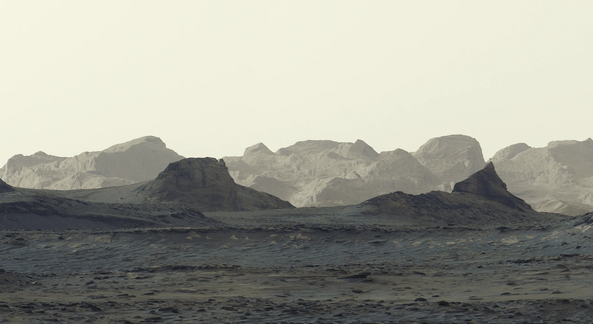

Planetary Observation Foundation · POF
POF
Workbench.
Annotate planetary images. Train segmentation models.
Review, refine and process your next image collection.
Southern University of Science and Technology
01 / THE WORKBENCH
Annotation. Training.
Batch segmentation.
Annotate a landform. Train a model. Map the next image. Keep your data, labels and models connected in one desktop workspace.
A complete image canvas.
A full image canvas with polygons, a brush, an eraser and a lasso. Open existing masks or Shapefiles and keep refining your labels.
TIFF + common images · PNG mask + SHP02 / A LEARNING LOOP
Active learning.
With you in the loop.
Start with a few annotations or an existing model. Review suggested regions, correct the labels, then train the next round.
- 01
Choose what matters
Bring in your imagery and define a task.
- 02
Review. Refine. Repeat.
Edit suggested labels without leaving the canvas.
- 03
Take the model further
Train with reviewed labels and compare validation results.
Actual interface · metrics belong to the displayed run
03 / THE POF FRAMEWORK
Terrain-assisted.
Pixel by pixel.
POF is a terrain-assisted segmentation framework for planetary remote-sensing images. It combines semantic context, local image details and terrain cues to identify a target landform at the pixel level.
POF Workbench brings this framework into a desktop workflow: prepare labels, train a task-specific model, review suggestions and export segmentation results.
POF is designed to grow toward recognition and additional planetary-image tasks.
Explore the workflow in the manualSemantic context
DINOv3 features capture broader shape and context.
Local details
A CNN branch retains textures, edges and small features.
Terrain cues
Use an optional DEM, or estimate relative terrain from the image.
Target segmentation
Pixel masks, boundaries and optional GIS vectors.
Estimated relative terrain is not a measured elevation product. Results depend on the task, training data and image resolution.
04 / DOWNLOAD POF
POF
Workbench.
Planetary image annotation and segmentation for Windows.
Windows 10 / 11 · 64-bitGet the latest release.
Checking the latest release…
View release downloadsAll releases & portable buildsIncluded. No Python setup.
Optional download in Settings.
Delivered through GitHub Releases.
A FEW THINGS TO KNOW
Before you begin.
Do I need a GPU?
The base package can run on the CPU. For training and inference, a compatible NVIDIA GPU can improve performance. The GPU runtime can be downloaded and configured from Settings.
Can I use existing labels?
Yes. Open PNG masks or Shapefile labels for editing. Choose your output format in Settings; PNG mask is the default.
Do I need a DEM?
A DEM is optional. When no valid DEM is supplied, supported POF models can estimate relative terrain from imagery. This estimate is not a measured elevation product.
Is this affiliated with NASA?
POF Workbench is developed by the 南方科技大学行星与人工智能实验室. NASA imagery is credited to its respective missions. Use of these images does not imply NASA endorsement.